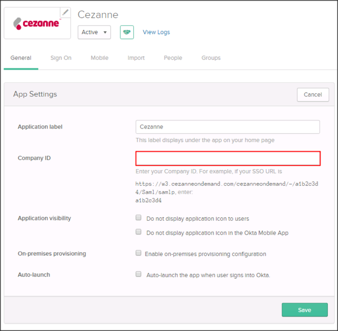
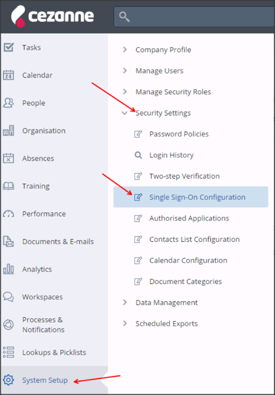
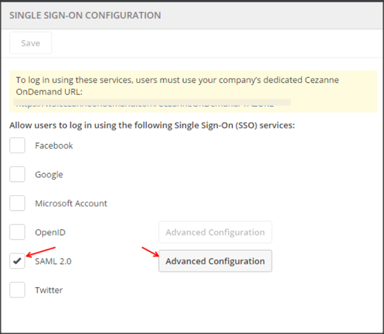
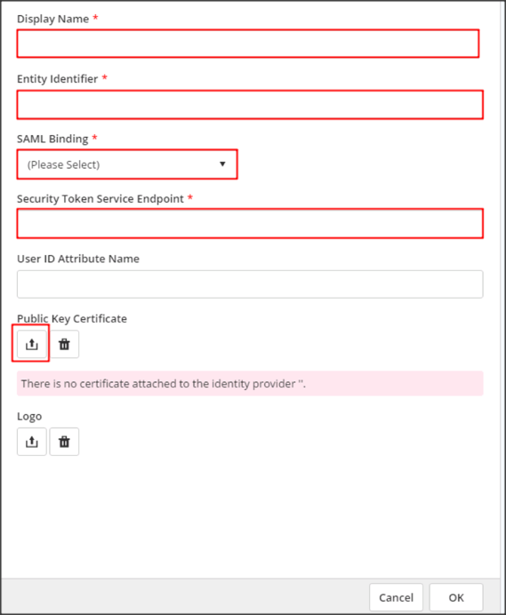
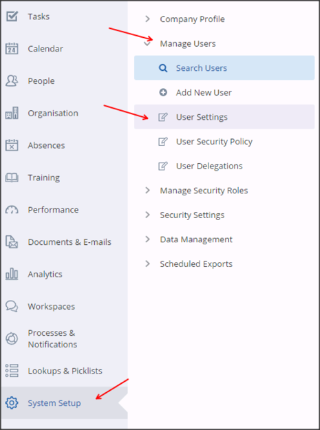
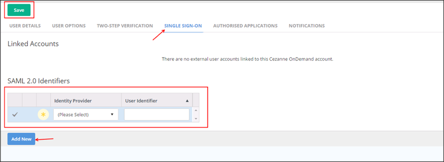

In Okta, select the General tab for the Cezanne app, then click Edit.
Enter the Company ID provided to you by Cezanne into the Company ID field.
Click Save.

Login to your Cezanne account as an administrator.
Navigate to System Setup > Security Settings > Single Sign-On Configuration:

Check the SAML 2.0 box, then select Advanced Configuration:

Click Add New, then enter the following (see screen shot at the end of step for reference):
Display Name: Enter a display name, for example, Okta.
Entity Identifier: Copy and paste the following:
Sign into the Okta Admin Dashboard to generate this variable.
SAML Binding: Select POST.
Security Token Service Endpoint: Copy and paste the following:
Sign into the Okta Admin Dashboard to generate this variable.
Public Key Certificate: Download then upload the following certificate:
Sign into the Okta Admin Dashboard to generate this variable.
Click OK then Save.

You now need to associate Okta users with Cezanne users. Navigate to System Setup > Manage Users > User Settings:

Click Search.
Select the user you want to update.
Select the Single Sign-On tab then click Add New and enter the following (see screen shot at the end of step for reference):
Identity Provider: Select the identity provider’s name you setup in step 5 above.
User Identifier: Enter the user’s OKTA username.
Click Save.

Done!
Notes:
IDP-initiated flows are supported.
SP-initiated flows and Just In Time (JIT) provisioning are not supported.